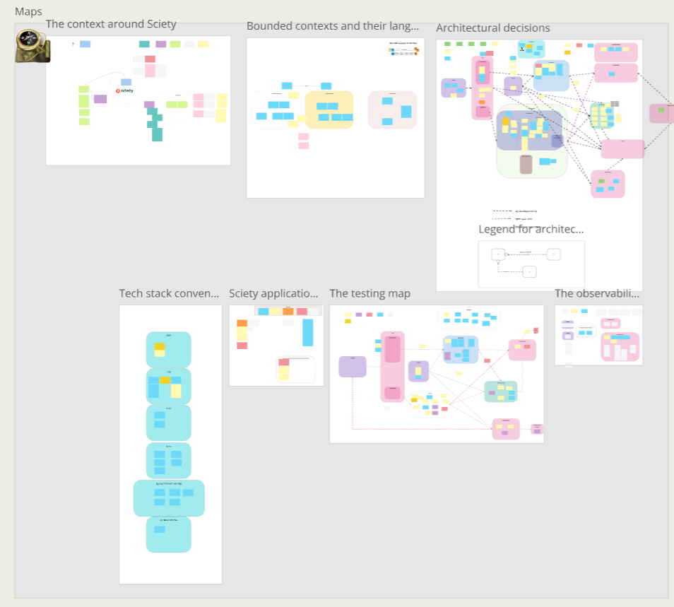
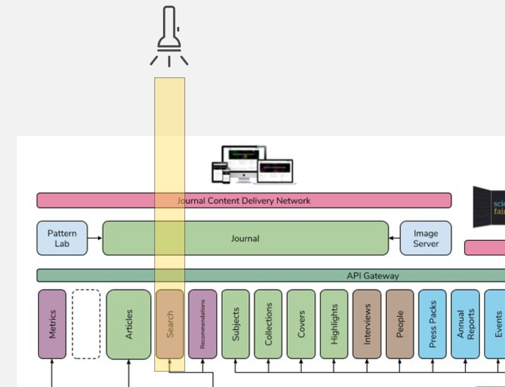

- Tech Lead
- Problems I work on
- Making software easy to change
- Helping engineers to do it
- Growing enough basil and parsley
The situation
The situation
Flashback: ensemble programming
.jpg)
.jpg){kind=link}
All the brilliant people working on the same thing, at the same time, in the same space, on the same computer. -- Woody Zuill
For an idea to go from someone’s head into the computer, it must go through someone else’s hands. -- Llewellyn Falco
- Driver: Hands
- Navigators: Heads
- Designated Navigator: Voice


Experiments that worked (or didn't)
How do we make sense of it all?
Collective ownership of maps
Deploy a change on day 1
Torchlight feature
Trunk-based development
Agile is sooner, not faster
Lowering transaction costs
Rate of change
A software system’s first derivative is its build and deployment toolchain. -- Gregor Hohpe in "The Software Architect Elevator"
In practice
-
make check: running a subset of fast tests and static checks, that will also run in CI -
make dev: exploratory testing to reproduce a behavior locally -
make prod: likedevbut with a (reasonable subset of) production data for higher fidelity - They should be portable, running on everyone's machine.
Results
- From 1 [big] to 20-30 [small] commits per day, on the trunk
- Delays of pull requests (1 day to months) and reviews eliminated
- Developers in the team at all levels of seniority can now navigate someone new to perform a change
Thanks for your attention!